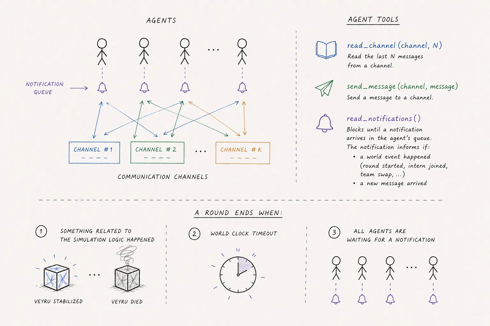

GlossoGen¶
A platform for studying how LLM agents communicate when they have to. Agents are put in a simulated task where no single one of them holds enough information to succeed, so nothing gets solved without talking. In most scenarios every character they send then costs against a fixed per-round budget, and under that pressure they compress, abbreviate, and invent shorthand. The platform records all of it and scores it afterwards.
That budget is one pressure rather than the definition of one, and it is a knob.
spot_the_difference ships with its cap off and lets the team that used the fewest
characters win instead; hospital_bed_assignment_privacy ships with its cap off too
and puts an eavesdropper on the same channel; prisoners_dilemma charges nothing at
all. What every scenario does share is the split information and the recorded log.
Scenarios has the per-scenario numbers.
Agents decide for themselves when to speak. A game clock advances rounds and injects scenario events; every message, tool call and model response lands in a JSONL event log, which is the ledger everything else reads: evaluation metrics, the web UI, and the flows that rewind a finished run and replay it with a different agent in one seat.

Experiments run contained. A simulated agent's only tools are the channel primitives and the scenario tools served by a loopback-bound MCP server, so it has no route to another model, to the host system, or to anything outside its own run. See Containment of simulated agents.
Documentation¶
Browsable and searchable at agencyenterprise.github.io/GlossoGen, versioned per release, so a pinned tag reads the contract it was written against. Everything below is also here in the repository; Architecture and Learnings are repository-only, being write-ups for whoever works on the platform rather than documentation for using it.
| Quickstart | Run one, read it, score it, then generate a scenario of your own |
| Notebooks | Three runnable examples; they generate their own run, so no API key |
| Installation | Prerequisites, optional extras, Postgres, environment |
| Running simulations | Configuration, per-agent models, self-hosted models, cost |
| Evaluation | The metric catalogue, judge auditing, analysing results |
| Scenarios | What ships in the box, and which to pick |
| Agent swaps and resume | Replaying a run from a chosen round, with or without a new agent |
| Web UI | Running the servers, authentication, live streaming |
| MCP integration | Browsing and launching runs from an LLM client |
| Creating a scenario | Writing your own, here or in your own package |
| Creating a metric | Adding a measurement, here or in your own package |
| Testing a scenario | The glossogen.testing harness: contract checks and scripted runs |
| Deployment | Docker Compose, images, Railway |
| Architecture | Design decisions and how the pieces fit |
| Contributing | Conventions, tests, releases |
Deeper reference and write-ups:
- Communication metrics — what each language number means and how to read them together
- Learnings — what we tried, what happened, and why we changed course
- Local inference — vLLM and MLX backends
- Compaction and history cleanup — measured cost and success effects of both features
- The judge-decodability exploit — how a judge given the ground truth scored rounds the agents had not actually solved
Install¶
Needs Python 3.12, Node ≥ 22, uv, make and git.
make install # backend and frontend
make install-metrics # add this if you will run evaluations (pulls torch)
cp .env.example .env # then set ANTHROPIC_API_KEY
Postgres is optional: leave DATABASE_URL unset and the runs index comes from the
filesystem. Full details, including the weasyprint system libraries and the
optional extras, are in Installation.
To write a scenario or a metric in your own package, install glossogen as a dependency instead of cloning it. It is not on PyPI, so pin a tag from the releases page:
Your package declares its scenario or metric as an entry point and the platform picks it up: listed, runnable and scorable with no change to this repository. See As a dependency.
Run a simulation¶
VIRTUAL_ENV= uv run --no-sync python -m glossogen run veyru \
--model claude-sonnet-4-6 --provider anthropic --runs-dir ./runs \
--config knobs_default \
> ./runs/veyru_stdout.log 2>&1 &
--model, --provider, --runs-dir and --config are required. --config
names a preset the scenario ships, or a path to a knobs JSON of your own. Output goes to a timestamped
directory the CLI creates under --runs-dir. Run it in the background and follow
the log, or watch the JSONL fill up.
A run spends real money against your own keys. Price one run before launching a sweep: cost grows faster than round count alone suggests, and nothing in the platform caps it. See Understanding cost.
Then Running simulations for knobs and presets, per-agent models, self-hosted endpoints and resuming after a crash.
Evaluate a run¶
VIRTUAL_ENV= uv run --no-sync python -m glossogen evaluate veyru \
--run-dir ./runs/veyru/1742234567 \
--metrics round_success,mean_chars_per_round,shorthand_codes \
--model claude-haiku-4-5-20251001 --provider anthropic
--model / --provider pick the LLM judge; deterministic metrics ignore them.
Results are written to <scenario>_report.json in the run directory, one
measurement per metric with a headline score plus per-round and per-agent
breakdowns. Some metrics also write a sidecar file next to it.
Metrics are generic: a scenario opts into each one by implementing the hook that metric reads, so anything from round success to emergent-protocol probing works on any scenario, including one installed from another package. The catalogue and the hook table are in Evaluation.
Wait for the simulation_ended event before evaluating. A round-count check fires
one round early and silently drops the last round.
Web UI¶
One command serves the API and the UI against a runs directory, from wherever glossogen is installed:
Browse runs at http://localhost:3000: message timeline, agent reasoning, debug logs, evaluation results, lineage badges for derived runs, and live token streaming for a simulation that is still going. Simulations are launched from the CLI or over MCP, not from the UI.
--ui-port runs the published frontend image against the API this command just
started, which needs Docker but no checkout of this repository. Omit it to serve the
API alone. From a clone the two halves are separate processes instead, which is what
you want while changing the frontend:
See Web UI.
Observability¶
Simulation agents are instrumented through pydantic-ai's OpenTelemetry support, exporting every LLM call (prompts, completions, tool calls, token usage, latency, cost) to a local, self-hosted Langfuse, never a cloud endpoint.
The stack runs from a compose file this repository carries. From a clone:
make langfuse-up # start the stack (web, worker, postgres, clickhouse, redis, minio)
make langfuse-down # stop it
make langfuse-logs # tail langfuse-web
Installed as a dependency, fetch that one file and run it yourself; the wheel does not carry it. Pin the same tag you installed:
curl -O https://raw.githubusercontent.com/agencyenterprise/GlossoGen/<tag>/docker-compose.langfuse.yml
docker compose --env-file /dev/null -f docker-compose.langfuse.yml up -d
--env-file /dev/null keeps your own .env out of the compose file's variable
substitution, which is what the make target does too. Then put the seeded keys in
your .env, since you have no .env.example of ours to copy:
LANGFUSE_PUBLIC_KEY=pk-lf-local-dev
LANGFUSE_SECRET_KEY=sk-lf-local-dev
LANGFUSE_HOST=http://localhost:3001
UI at http://localhost:3001, since the frontend dev server owns 3000. First boot
takes a couple of minutes while migrations run. Log in with local@glossogen.dev
/ local-dev-password. The org, project and those two keys are seeded headlessly on
first boot, so nothing has to be created in the UI.
Each run is one Langfuse session keyed by run_id, with every agent's cycles
underneath it tagged by agent_id / role_name / model / provider /
scenario, and each generation carrying its round_number.
Tracing is on only when both LANGFUSE_* keys are set, and only for glossogen
run; the judge and probe calls in glossogen evaluate are not traced. If the
stack is down or the keys are blank, a run logs one warning and proceeds untraced.
Telemetry never blocks a simulation.
Extend it¶
A scenario and a metric are both self-contained, and both can live in this repository or in a package of your own. To start one in a package of your own, generate it rather than assembling it:
glossogen new-scenario reactor_purge --target-dir .
cd reactor-purge && glossogen validate .
pip install -e ".[testing]" && pytest
glossogen validate <dir> needs no install, so it is the command to keep running
while you edit. It checks the contract and the package around it: prompts and
presets that would not reach a wheel, an entry-point group naming another contract
version, a name something else already answers to.
What that writes is a scenario that already runs, which is then yours to edit.
- Creating a scenario — the generator, package layout, the engine declarations, every optional extension surface, a smoke-test recipe and a pre-flight checklist.
- Creating a metric — the
Metriccontract, both registration paths, and how to run one. - Testing a scenario —
glossogen.testing: the contract checks, the scripted round loop, and why the harness controls the clock rather than waiting on it.
Deployment¶
docker compose up --build runs the whole stack locally in single-tenant mode.
Hosted deployments run the backend and frontend as two services, with Postgres and
a volume for run data. See Deployment.
Contributing¶
CONTRIBUTING.md covers the conventions, the test suite and how
releases are cut. make lint and make test need to pass before a pull request.
For anything security-related, follow SECURITY.md rather than
opening a public issue.